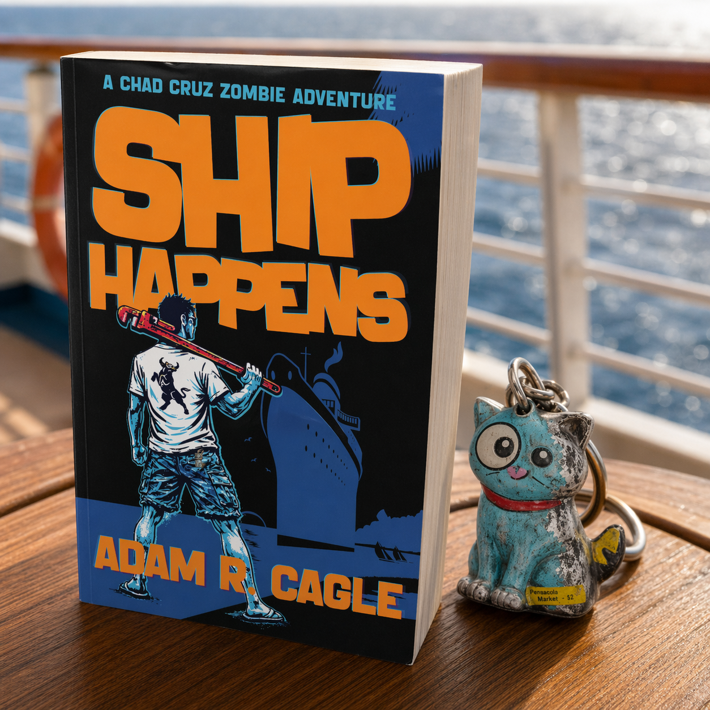
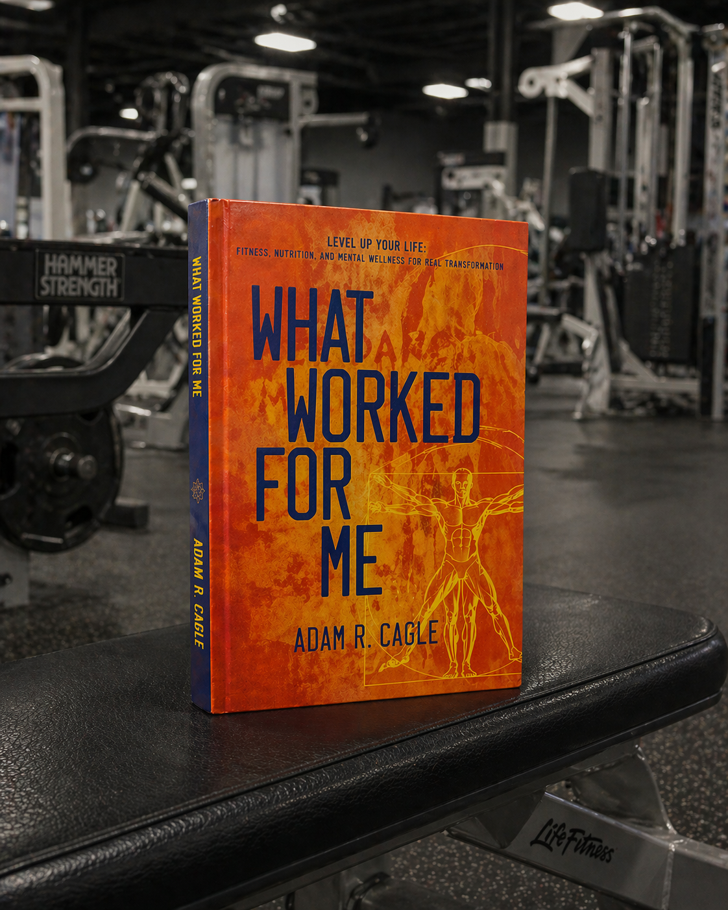

I am a copywriter by trade and a writer by compulsion.
Vampires of the Ottoman Empire, workout manifestos, zombie comedies, and arguments about civilization. All written because they popped into my head and wouldn't go away.

Vampire's Babysitter
Historical Fiction · Horror
In 1450, Vlad Dracula half-turns a minor Wallachian nobleman named Costache without asking and assigns him a job: babysit Orban, an eight-hundred-year-old vampire engineer, through the Ottoman court at Edirne, where Orban will build the cannon that breaks Constantinople's walls. Costache is to file reports, keep Orban from eating anyone important, and not feed. He manages two of the three.
Over twenty-five years and three empires, he runs intelligence, rescues a doomed infant from the Ottoman harem, falls for a Greek harbor vendor named Elena, and watches the greatest city in the world fall to a weapon he helped aim at it, while slowly understanding that the mission Vlad gave him and the mission Vlad was running were never the same thing.
The dome of the Hagia Sophia floated in the failing light like something placed there by a hand larger than any hand that builds.
He was old in the way that rivers are old, or mountain passes.

Ship Happens
A Chad Cruz Zombie Adventure
Chad Cruz is thirty-four, fired by a pizza app, and living in a studio apartment with a ceiling stain he named Gary because it is the most consistent thing in his life. When his estranged aunt dies and leaves him cruise tickets, he boards a seniors ship as the youngest passenger by four decades. The zombies start on day two.
What follows is a disaster comedy in which Chad, armed with a pipe wrench and catastrophically low expectations for himself, fights through the undead alongside a Cuban welcome attendant with a machete and a fedora, a perpetually stoned jazz musician with a butterfly knife, and an elderly woman in pearls who decides he is worth something before he does. He is just getting started when the ship hits Miami.
It sounded like either a discount exorcism or a restaurant where the appetizers scream.
The English language does not contain the phonetic architecture necessary.

The Deal
Every Civilization Runs on a Deal. It's Time to Renegotiate.
Every civilization runs on the same deal: you get security, abundance, and convenience; in exchange, you become visible, manageable, and extractable. Adam Cagle traces this pattern across ten thousand years of human history, from the first grain stores of Mesopotamia through writing, money, law, and digital platforms, showing how each technology that solved a genuine problem became a tool of deepening control.
Artificial intelligence, he argues, is the first tool in the sequence that can optimize itself, the first that does not need a human operator to tighten the deal. The Deal is not a lament. It is a structural argument that for the first time in history the tools exist to reverse the direction of surveillance, and a clear-eyed accounting of what stands in the way.
Every time, the tool that solved the problem became the tool that locked the door.
The tool has become its own operator. That has never happened before.

The Ledger
An Accounting of Gender Roles
The plow vanished from most families' lives generations ago. The gender attitudes it created did not. The Ledger traces the ten-thousand-year construction of sex roles across both columns: what each arrangement gave and what it cost, to both sexes, without selecting evidence to reach a verdict held in advance.
From the Neolithic agricultural revolution through the religious codifications that converted economic arrangements into divine mandates, to the present-day divergence in which young men and women converge on what they want from intimate life but fail to build it together, Adam Cagle keeps both columns open. The plow is gone. The scripts it wrote are not. The deal is waiting to be made.
Rigid role assignment in a group that small is not a philosophy. It is a death sentence.
The debate about whether women could do the work was taking place while women were doing the work.

What Worked For Me
Fitness · Nonfiction
When Adam Cagle's five-year-old son sat down beside him, poked him in the belly, and told him he was fat, something shifted. Not into shame or a crash diet, but into a genuine question: what would it actually take to change? What Worked For Me frames that question as an RPG, with the reader as the hero and the body as a character waiting to be leveled up.
Cagle spent three years experimenting with diets, workouts, supplements, and recovery protocols, collaborating with coaches, doctors, and professional athletes along the way, and documents not just what worked but what failed and why. The result is a fitness memoir without the sermon, candid and practical, built for people who are tired of being told to tough it out and just want to know what actually moves the needle.
I simply laugh at the pathetic attempt to weasel out of what's coming.
Sometimes the path is the path.